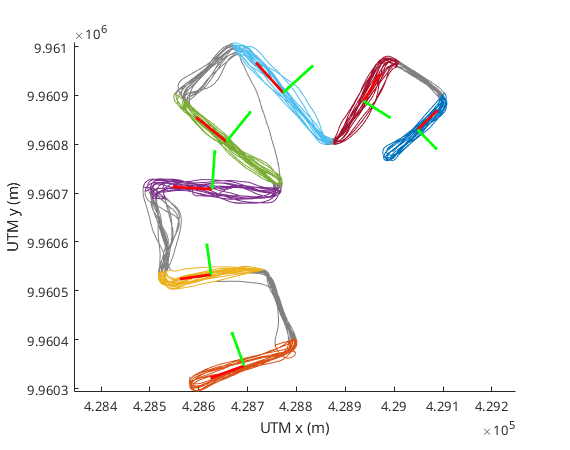

Setting the location and direction of the cross-section
Contents
In the previous section, Data selection we saw how to select data to process cross-sections. The cross_section_selector function also generated XSection objects that contain information on the cross-section. Let's have a closer look at the properties of a XSection object:
xs(1)
ans =
XSection with properties:
origin: [2×1 double]
direction: [2×1 double]
scale: 73.0062
direction_orthogonal: [2×1 double]
The XSection objects in essence define the local coordinate system of the cross-section. The origin property is the origin of the cross-section coordinates. These are cartesian coordinates that are oriented along and accross the cross-section. the direction property defines the direction along the cross-section ,and the direction_orthogonal property defines the direction orthogonal to the cross-section. The scale property gives a typical scale (in m) of the cross-section.
We can plot the xsections on top of the ADCP track to better understand how cross-sections are defined:
figure mmbend.plot_track('Color', [.5 .5 .5]) % plot the measured track hold on mmbend.plot_track(ef) % plot the selected portions of the track xs.plot % plot the cross-section definitions legend off
The green arrows indicate the direction_orthogonal property, the red arrows the '_direction_' property and the arrows originate in origin.
XSection default construction
XSection objects can be constructed without arguments, which will return a default object:
xs_default = XSection(); xs_default.origin xs_default.direction
ans =
0
0
ans =
1
0
properties can be manually adjusted.
XSection construction with VMADCP data
When constructed with VMADCP data, with or without EnsembleFilter objects the track information is used to construct the cross-section definition. The largest eigenvector of the positions is used as the tangential direction of the cross-section. The scale is the standard deviation of the positions projected on the direction of the cross-section.
xs_from_vmadcp = XSection(mmbend, ef(1))
xs_from_vmadcp =
XSection with properties:
origin: [2×1 double]
direction: [2×1 double]
scale: 73.0062
direction_orthogonal: [2×1 double]
This created the xsection definition for the first cross-section defined by the data selected in ef